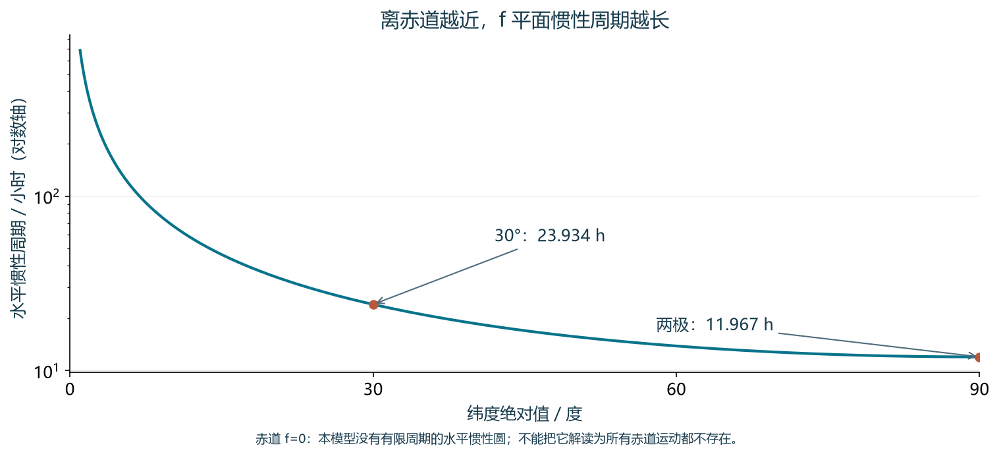
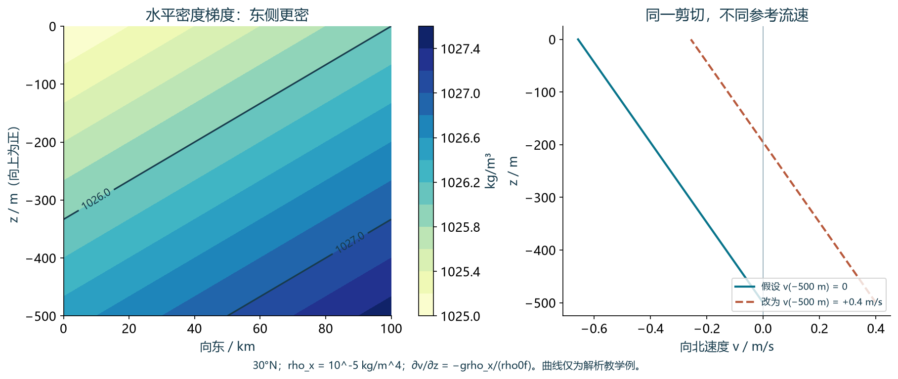
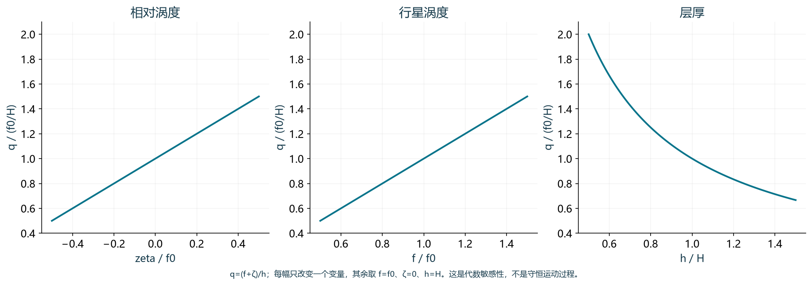
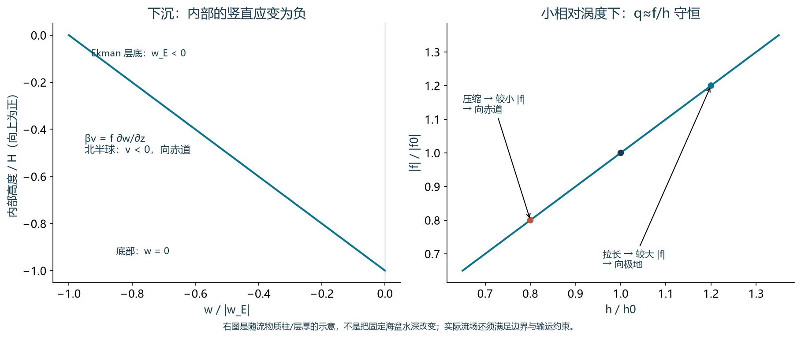

1. 纬度决定惯性周期
Work out the period of inertial oscillations at the north pole, 30N, equator, and south pole.
计算北极、北纬30°、赤道和南极的惯性振荡周期。
北极与南极约11.97小时，北纬30°约23.93小时。赤道上 \(f=0\)，局地水平 f 平面模型没有有限的惯性振荡周期。
惯性振荡是只受科里奥利作用的水平流动。取纬度为 \(\varphi \)，则 \(f=2\Omega \sin \varphi \)，周期 \(T=2\pi /|f|\)。采用 \(\Omega =7.292115\times 10^{-5} s^{-1}\)，也就是地球恒星日约23小时56分4秒；这里不应直接用24小时太阳日代替。
北极 \(f=+1.458423\times 10^{-4} s^{-1}\)，\(T=11.967\)小时；北纬30°的 \(f=+7.292115\times 10^{-5} s^{-1}\)，\(T=23.934\)小时；南极 \(f=-1.458423\times 10^{-4} s^{-1}\)，周期仍为11.967小时。周期必须为正，f 的符号决定旋转方向：从上方看，北半球顺时针，南半球逆时针。
赤道上 \(\sin \varphi =0\)，因此 \(f=0\)。公式在 \(\varphi \to 0\) 时趋于无穷大；在赤道本身，这表示该模型不产生水平惯性圆，而不是存在一个实际可完成的无限周期振荡。真实赤道动力学还需考虑 f 随纬度变化及其他作用。
| 位置 | \(f / s^{-1}\) | 惯性周期 | 水平转向 |
|---|---|---|---|
| 北极 | \(+1.458423\times 10^{-4}\) | \(11.9672 h \approx 12 h\) | 顺时针 |
| 30°N | \(+7.292115\times 10^{-5}\) | \(23.9345 h \approx 24 h\) | 顺时针 |
| 赤道 | 0 | 无有限周期；形式极限为∞ | 无水平惯性圆 |
| 南极 | \(-1.458423\times 10^{-4}\) | \(11.9672 h \approx 12 h\) | 逆时针 |
改变纬度，核对周期与旋转方向
无摩擦、无水平压力梯度的传统 f 平面模型，初始速度向东。图的坐标是 \(u/U\) 与 \(v/U\)；示意时间 1 秒 = 2 小时。赤道处暂停惯性圆展示。

教学模型，非实测海流；手机可横向滑图或点击原尺寸。
参考依据：[price1]
2. 地转平衡中的力与流向
In geostrophic flow, what direction is the Coriolis force in relation to the pressure gradient force? What direction is it in relation to the velocity?
在地转流中，科里奥利力相对于压力梯度力指向什么方向？相对于流速又指向什么方向？
科里奥利力与压力梯度力大小相等、方向相反，并与流速垂直：北半球指向流速右侧，南半球指向左侧。
地转平衡指水平压力梯度力与科里奥利力相互抵消。压力梯度力为 \(-\nabla _{h}p/\rho _{0}\)，指向低压；因此科里奥利力指向高压。这里的“压力梯度力”与数学上的“压力梯度 \(\nabla p\)”方向相反，不能混用。
以 x 向东、y 向北、z 向上，水平流速为 (u,v)，科里奥利加速度是 (fv,−fu)。它与流速的点积为零，所以两者成90°。例如北半球向东流时，科里奥利力向南，压力梯度力向北，南侧压力较高。
因此地转流沿等压线流动：北半球高压位于流向右侧，南半球位于左侧。这一常规地转关系要求 \(f\ne 0\)；赤道附近不能直接把同一公式照搬过去。

教学模型，非实测海流；手机可横向滑图或点击原尺寸。
参考依据：[talley_geo] [price1]
3. 密度给出切变，参考速度确定绝对流速
What is a "level of no motion"? Why would a "level of known motion" be a better choice for the same kind of calculation? (What can \(w_e\) actually compute about the velocity structure given the density distribution and an assumption of geostrophy?)
什么是“无运动层”？为什么在同类计算中选择“已知运动层”更好？（给定密度分布并假定地转平衡，我们究竟能算出流速结构的什么信息？）
无运动层是假定地转流速为零的参考深度。密度分布只确定垂向切变和相对流速；已知的参考地转流速可补足未知常数，避免把深层真实流动误当作零。
在地转与静力平衡下，密度的水平梯度决定地转流的垂向切变，即热成风关系。取 z 向上且参考密度 \(\rho _{0}\) 为常数：\(\partial u/\partial z=g(\partial \rho /\partial y)/(\rho _{0}f)\)，\(\partial v/\partial z=-g(\partial \rho /\partial x)/(\rho _{0}f)\)。积分只能得到 \(u(z)-u(z_{r})\) 与 \(v(z)-v(z_{r})\)，不能单凭密度确定绝对流速。
“无运动层”把未知的 \(u(z_{r})\)、\(v(z_{r})\) 都设为零，常选在深处。但深海也有流动，错误参考值会使整条流速剖面出现偏移，深层弱流和总输运尤其容易受影响。它是计算假设，不是密度观测能证明的事实。
“已知运动层”用独立观测或质量守恒等约束确定参考流速，再加到相对剖面上。参考值应代表相应尺度的地转分量，例如经过适当平均或滤波的观测；原始测流数据中的潮汐、惯性与其他非地转分量不宜直接作为参考。

教学模型，非实测海流；手机可横向滑图或点击原尺寸。
4. 位涡：旋转与水柱厚度
Name the three contributing factors to potential vorticity.
说出影响位涡的三个因素。
相对涡度、行星涡度，以及水柱的伸缩／层厚（在连续分层模型中对应分层效应）。单层模型中 \(q=(f+\zeta )/h\)。
相对涡度 \(\zeta =\partial v/\partial x-\partial u/\partial y\) 描述水体相对于地球的局地旋转；行星涡度 \(f=2\Omega \sin \varphi \) 来自地球自转，随纬度改变；层厚 h 则体现水柱被拉伸或压缩的程度。这三个因素共同控制单层或浅水模型的位涡 \(q=(f+\zeta )/h\)。
注意，第三个因素不是再加一个“厚度涡度”项：在这个公式中，层厚位于分母。若位涡守恒，拉长水柱使 h 增大，就需要相应增大绝对涡度 \(f+\zeta \)；压缩水柱则反之。
连续分层的 Boussinesq 模型可用浮力位涡 \(q_{b}=\omega _{a}\cdot \nabla b\)，其中 b 为浮力、\(\omega _{a}\) 为绝对涡度矢量。忽略倾斜贡献时，它近似为 \((f+\zeta )N^{2}\)，\(N^{2}=\partial b/\partial z\)。不要把不同模型与归一化下的位涡公式混用。

教学模型，非实测海流；手机可横向滑图或点击原尺寸。
5. 风驱动如何传递到海洋内区
How does Ekman pumping connect to the Sverdrup interior flow? Explain using potential vorticity arguments.
埃克曼抽吸如何与斯韦尔德鲁普内区流相联系？请用位涡论证解释。
埃克曼输运的辐合或辐散产生垂向速度，压缩或拉伸内区水柱。内区近似守恒位涡，因而以经向运动改变 f 来配合厚度变化；稳态关系为 \(\beta V_{i}=f w_{E}\)。
风应力驱动表层埃克曼输运，其水平辐合导致下沉，辐散导致上升。这一垂向速度是表层摩擦层与近似无摩擦的地转内区之间的联系。取 z 向上，令 \(w_{E}\) 为埃克曼层底部的垂向速度，则上升为正、下沉为负；应区分物理上的层底速度与分解后的埃克曼垂向分量。
用水柱位涡 \(q=(f+\zeta )/h\) 解释：在无摩擦、绝热的内区，随流体运动的位涡近似守恒。若 \(|\zeta |\ll |f|\)，则 \(q\approx f/h\)。下沉在上端压缩水柱，使 h 减小；要维持 q，|f| 也需减小，所以内区流向赤道：北半球向南，南半球向北。上升则拉伸水柱，要求更大的 |f|，对应向极地流动。这里“向赤道”不能简单等同于“向南”。
相同机制可写成稳态线性内区涡度平衡 \(\beta v=f\partial w/\partial z\)，其中 \(\beta =\partial f/\partial y\)。若下边界 \(w\approx 0\)，从下边界积分到埃克曼层底部，得到 \(\beta V_{i}=f w_{E}\)，\(V_I=\int_{\mathrm{interior}}v\,\mathrm dz\)。故北半球下沉 \(w_{E}<0\) 时 \(V_{i}<0\)；南半球 \(f<0\)，则 \(V_{i}>0\)，方向与位涡论证一致。
以下采用薄埃克曼层近似：忽略该层内地转输运的散度及其相对于深厚内区的输运贡献，并取层顶垂直速度近似为零。这样，层底的总垂直速度可近似用埃克曼输运的散度表示。若保留摩擦层内的地转散度，边界总垂直速度还含地转贡献，不能直接与埃克曼垂直分量等同。
保留 f 的纬向变化时，埃克曼输运为 \(M_{E}=(\tau ^{y}/(\rho _{0}f),-\tau ^{x}/(\rho _{0}f))\)，所以 \(w_{E}=\nabla _{h}\cdot M_{E}=(\operatorname{curl}_z \tau )/(\rho _{0}f)+\beta \tau ^{x}/(\rho _{0}f^{2})\)。把它代入内区关系，并加上 \(V_{E}=-\tau ^{x}/(\rho _{0}f)\)，两项 \(\beta \) 修正抵消，得到经典斯韦尔德鲁普平衡 \(\beta (V_{i}+V_{E})=(\operatorname{curl}_z \tau )/\rho _{0}\)。因此经典公式中的输运包括埃克曼分量；若保留 \(\beta \) 修正，不应把它全写成单独的内区输运。
这些关系适用于大尺度、缓变、小罗斯贝数的海盆内区，并采用近似平底、弱底部应力和较小底部垂向速度。摩擦层本身受风应力转矩作用，并不守恒上述内区位涡；海盆还需要边界回流闭合质量收支，边界处通常不能继续使用同一内区近似。

教学模型，非实测海流；手机可横向滑图或点击原尺寸。
参考依据：[uh_sverdrup] [price4] [uh_sverdrup_slides] [uh_boundary]
图件与参考资料
原题转录自你提供的课堂图片。以下为带模型假设的参考解析；图件是独立绘制的解析教学例，不是观测资料。
- James F. Price · A Coriolis Tutorial, Part 1 (MIT OpenCourseWare)
- James F. Price · A Coriolis Tutorial, Part 2 (MIT OpenCourseWare)
- James F. Price · A Coriolis Tutorial, Part 4: Wind-driven circulation and the Sverdrup relation
- Lynne Talley · SIO 210: Geostrophy and reference velocity
- Lynne Talley · SIO 210 Lecture 4: Pressure gradients and geostrophic flow
- University of Hawaiʻi · OCN 620: Geostrophic flow and vertical vorticity
- University of Hawaiʻi · OCN 620: Sverdrup balance course notes
- University of Hawaiʻi · OCN 620: Sverdrup balance lecture slides
- University of Hawaiʻi · OCN 620: Western boundary current theory
- Potential Vorticity Structure across the Gulf Stream · Journal of Physical Oceanography